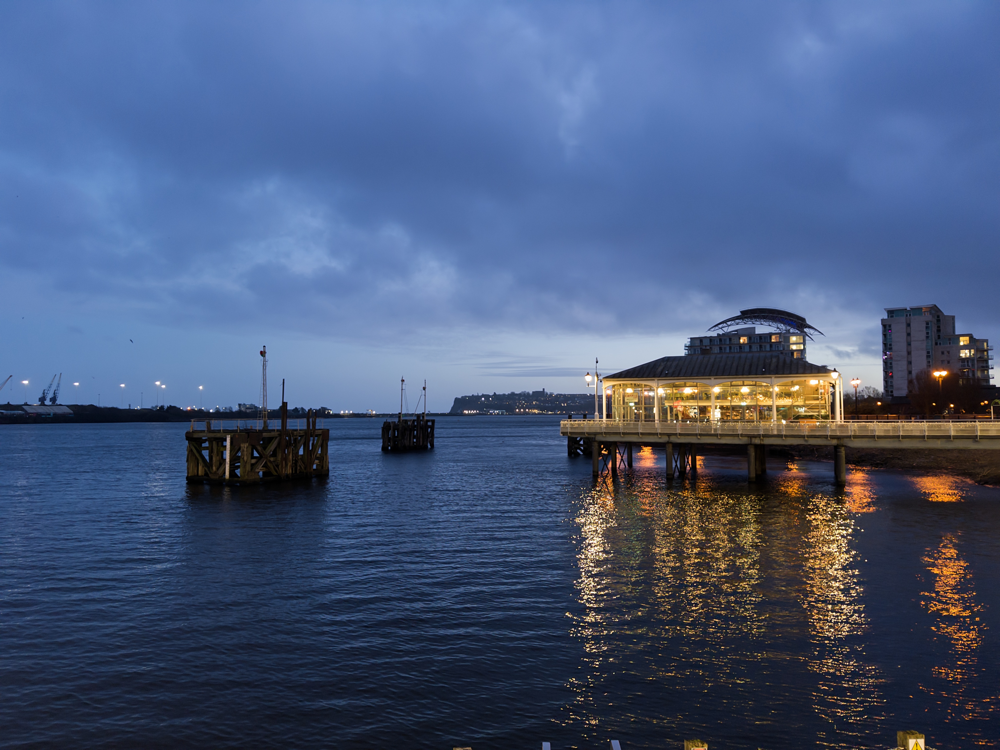
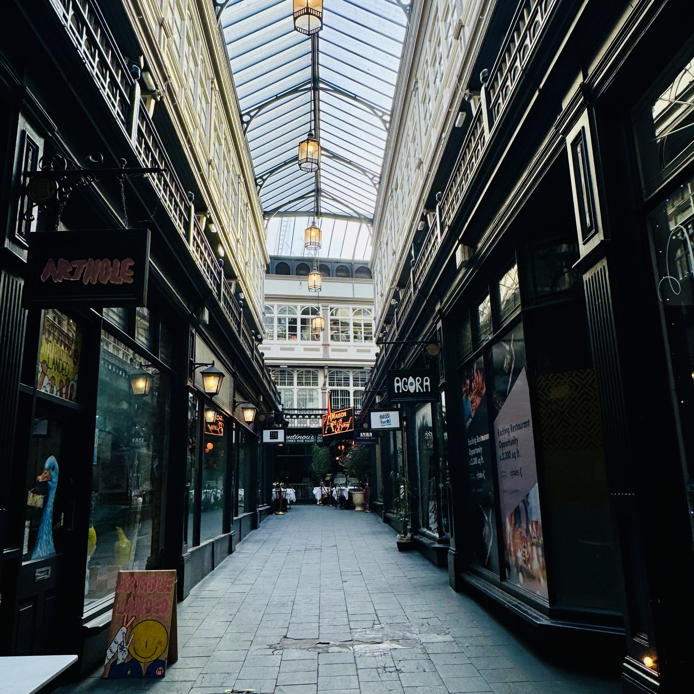

Goodbye, Cardiff.

The particular weight of the air, Cardiff Bay.
I've always thought humans are more sensory than we realise. When a city comes to mind, what arrives first isn't a picture — it's something closer to a feeling. The particular weight of its air. The way sound carries on a Sunday morning. The smell of somewhere that has, without you quite noticing, become familiar.
Cardiff. I've been here just over a year. Not long, and yet not short. In a life of only so many decades, to have spent nearly eighteen months — your joys, your embarrassments, your quiet ordinary days — tied to one place. That means something.
If I had to choose a single image, it would be this: a vegetable stall in Cardiff Market, and him walking toward me. I'm from northern China, where winters are serious — minus twenty, frost on the windows before you're awake. Cardiff's cold never really bothered me. But my hands are always cold, no matter the season. He would take them in his and tuck them into his coat pocket, without making anything of it. We'd walk like that all the way to the bay. Just walking. I used to hope, quietly, that we'd never arrive.
The feeling of almost-love is like dew on an early spring morning. Sweet, and gone before you think to hold onto it.
"History is a quiet comfort for the lost. Very few great artists had easy lives. I would stand at the end of their stories and look back, while standing somewhere in the middle of my own, unable to see ahead."

The two years before Cardiff were the hardest of my life. I had left my undergraduate major behind — abandoned it, really, on a kind of faith — to study art. It didn't end the way those stories are supposed to end. I missed my dream again, and this time I wasn't sure what came next. I became afraid of daylight. I hid in the night, turning things over, reading Western art history as a way of not quite facing myself.
It was around that time I read about Pissarro. In circumstances far more difficult than mine, he held the Impressionist circle together. He made introductions. He championed others. He was, by most accounts, a steady warmth in a fractious world. Something about that stayed with me. I told myself: one day, I will see his work in person.
September 2024. I arrived in Cardiff. Museums and coffee shops are how I learn a city — I build them into shelters, places I can return to. So once I'd settled in, the first thing I did was find the museum. And there, to my surprise, was a Pissarro. He didn't leave many works behind — a fire saw to that. The museum sat along my daily route to school. Sometimes I'd stop and stand before the painting for a while, wondering how different the light looked through his eyes, what he was feeling when he made it.

Mermaid Quay feels like a maze, each shop its own small world.
I spent my last years as a student in this city. Weekend trips with friends. Cooking together. Wandering into small shops that turned out to be worth wandering into. Talking about the things that matter when you're young and figuring things out.
It all felt, somehow, very still. Then I met him, and started finding reasons to go to the bay more often. Whenever it was almost time to say goodbye, I'd ask: want to go to the bay? He left Cardiff eventually. I still go sometimes. I sit for a while, and then I walk home.
Before Cardiff, I didn't quite believe in myself. Leaving, I think I'm starting to — just a little. Cardiff is easy and particular in equal measure. Mermaid Quay feels like a maze, each shop its own small world. Go on a Wednesday for the fresh beef sandwich. I always get number six.

One more week, and I'll be gone.
I'm grateful to this city for catching me when I needed it most. The kindness I found here felt like a pair of warm hands holding my heart steady — so that whatever comes next, I can keep walking.